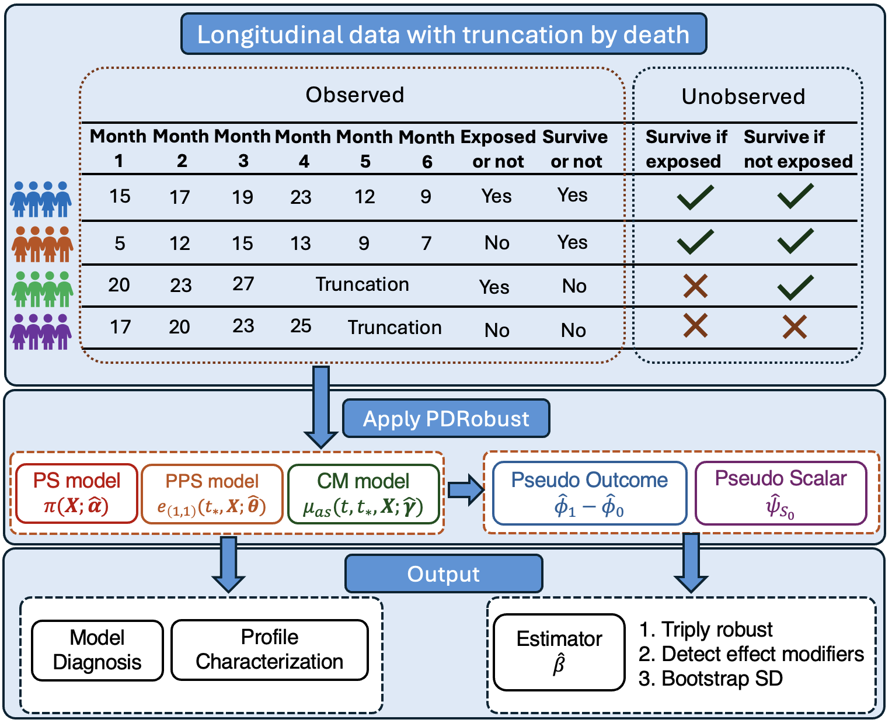
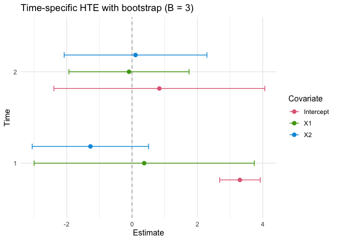

PDRobust: A Novel Analytical Tool for Evaluating Longitudinal Trajectories with truncation by death.

Background
Real-world data, such as administrative claims and/or electronic health records, is widely used for conducting longitudinal trajectory analyses. However, when investigating the trajectory of the Heterogeneous Treatment Effect (HTE) of an exposure/intervention, traditional methods cannot sufficiently address challenges inherent to the data, including
the presence of truncation by death, and
the characterization of the unobserved principal stratum of patients who would survive till the specific time point regardless of the exposure occurrence.
Therefore, methodological innovation is required to deal with these two challenges to obtain valid inference and interpretability.
Introduction
PDRobust is a novel analytical tool that incorporates multiple statistical techniques, including propensity score weighting, principal score weighting, conditional outcome mean fitting, and projection methods. It provides a thorough set of analyses, including the triply robust estimate of the HTE with the bootstrap standard deviation, and the diagnosis of nuisance models. The workflow is as follows.
data -> Mapping() -> DataCheck() -> DataStandard()
-> prediction / diagnostic / analysis functions1. Load the built-in package data
Both objects are ordinary long-format data frames loaded from the package data/ directory. BiSample is the analysis-ready binary example used for the main workflow. ImperfectConSample is a continuous example with deliberately imperfect records for demonstrating validation and explicit subject-level deletion.
library(PDRobust)
data("ImperfectConSample", package = "PDRobust")
dim(ImperfectConSample)
#> [1] 599 11
head(ImperfectConSample)
#> patient_id visit_month alive_status treatment clinical_outcome X1 X2
#> 1 PT-0171 0 1 1 4.598 1.452 -2.075
#> 2 PT-0100 6 0 1 NA 1.473 -0.758
#> 3 PT-0056 0 1 0 8.806 -2.722 -0.735
#> 4 PT-0034 6 1 0 13.851 -1.471 0.278
#> 5 PT-0164 12 1 1 9.643 -1.272 -1.881
#> 6 PT-0058 0 1 1 10.341 -0.534 -0.842
#> X3 X4 X5 X6
#> 1 -0.147 0 1 1
#> 2 0.608 0 1 1
#> 3 0.424 1 1 0
#> 4 -0.158 0 0 0
#> 5 -3.333 0 1 0
#> 6 -0.092 0 1 02. Define roles and analysis settings with Mapping()
Mapping() is the sole source of truth for structural column names, raw baseline and cutoff times, all nuisance-model covariates, effect modifiers, and the outcome type.
3. Validate the raw data with DataCheck()
DataCheck() never modifies the input data. It returns an itemized validation report with pass/fail status, severity, analysis-blocking status, diagnostic details, and recommended handling.
check <- DataCheck(ImperfectConSample, mapping)
names(check)
#> [1] "valid" "ready_for_analysis"
#> [3] "manual_resolution_required" "can_standardize"
#> [5] "checks" "settings"
#> [7] "diagnostics"
check$ready_for_analysis
#> [1] FALSE
check$manual_resolution_required
#> [1] FALSE
check$can_standardize
#> [1] TRUE4. Standardize the panel with DataStandard()
DataStandard() returns a sorted pd_data data frame. It safely converts explicit binary encodings, maps IDs to consecutive integers, maps the observed analysis-time grid to consecutive integers, and attaches mapping and audit attributes. Use drop = TRUE only when the reported subject-level exclusions are intended.
pd_data <- DataStandard(ImperfectConSample, mapping, drop = TRUE)
head(pd_data)
#> patient_id visit_month alive_status treatment clinical_outcome X1 X2
#> 1 1 0 1 1 10.803 0.168 0.421
#> 2 1 1 1 1 12.006 0.168 0.421
#> 3 1 2 1 1 7.833 0.168 0.421
#> 4 2 0 1 0 4.101 -2.400 -0.324
#> 5 2 1 1 0 5.508 -2.400 -0.324
#> 6 2 2 0 0 NA -2.400 -0.324
#> X3 X4 X5 X6
#> 1 -0.557 1 1 1
#> 2 -0.557 1 1 1
#> 3 -0.557 1 1 1
#> 4 -0.391 0 0 0
#> 5 -0.391 0 0 0
#> 6 -0.391 0 0 04. Run analysis and diagnostic functions
ps_fo <- treatment ~ X1 + X2 + X3 + X4 + X5 + X6
prin_fo <- alive_status ~ X1 + X2 + X3 + X4 + X5 + X6
out_fo <- clinical_outcome ~ (X1 + X2 + X3 + X4 + X5 + X6) * treatment HTESepT() returns an estimate for each requested observed standardized time and each mapped effect modifier, plus the intercept. target_time controls reported outcome-analysis times only. Set B > 0 for subject-level bootstrap standard errors and Wald confidence intervals.
separate_hte <- HTESepT(
pd_data,
ps_fo = ps_fo,
prin_fo = prin_fo,
out_fo = out_fo,
target_time = c(1, 2),
B = 3,
verbose = TRUE
)
#> Bootstrap: 1/3 successful after 1 attempts.
#> Bootstrap: 2/3 successful after 2 attempts.
#> Bootstrap: 3/3 successful after 3 attempts.
names(separate_hte)
#> [1] "summary" "forest_plot" "bootstrap_info"
#> [4] "boot_mat" "convergence" "model_diagnostics"
#> [7] "warnings" "mapping" "target_time"
#> [10] "formulas" "settings" "call"
separate_hte$forest_plot
Final user-facing estimates, predictions, diagnostics, and confidence intervals are rounded to three decimal places. Model fitting, probabilities, weights, estimating equations, bootstrap replicates, and confidence-interval calculations retain full numerical precision. If a finite prediction-based logistic fit is unstable, direct prediction calls issue one model warning; analysis calls consolidate repeated point-estimate warnings and store bootstrap warnings and model diagnostics in their returned objects. Within an analysis sample, one fitted nuisance model is reused for its A = 0 and A = 1 counterfactual predictions when the fitting rows and formula are identical.
Returned object summary
| Function | Main returned class | Main components |
|---|---|---|
Mapping() |
pd_mapping |
Structural roles, times, covariates, effect modifiers, outcome type |
DataCheck() |
pd_data_check |
Readiness flags, checks, diagnostics, settings |
DataStandard() |
pd_data |
Standardized panel plus mapping and audit attributes |
PSPred() |
pd_prediction |
Row-aligned propensity predictions |
PrinPred() |
pd_prediction |
Row-aligned cumulative principal scores |
OutPred() |
pd_prediction |
Row-aligned potential-outcome predictions |
PSDiag() |
PSDiag |
SMDs, IPTW weights, clipped propensity, plot |
PrinSDiag() |
PrinSDiag |
Standardized statistics, clipped propensity, p0, p1, plot |
QR() |
QR |
Weighted means, weighted quantiles, weights |
ORCI() |
odds_ratios |
Odds ratios, confidence intervals, model, plot |
HTESepT() |
pd_hte_timevarying |
Time-specific estimates, bootstrap results, plot |
HTEAllT() |
pd_hte_pooled |
Pooled estimates, analysis times, bootstrap results, plot |
SA() |
SA |
Sensitivity estimates, variance summaries, plots |